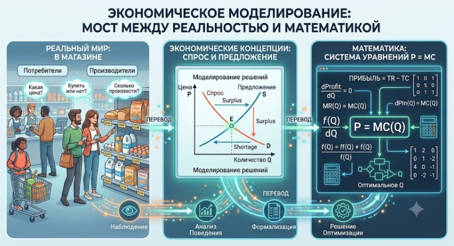
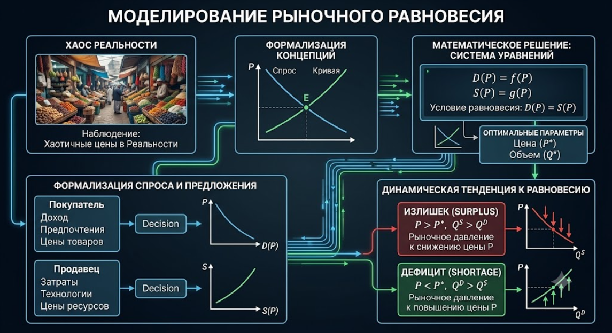
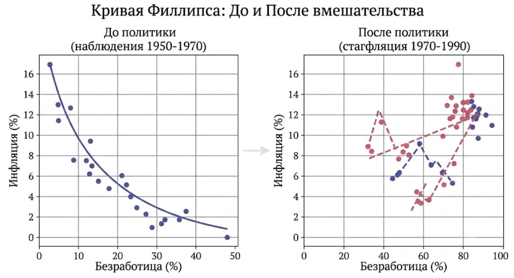
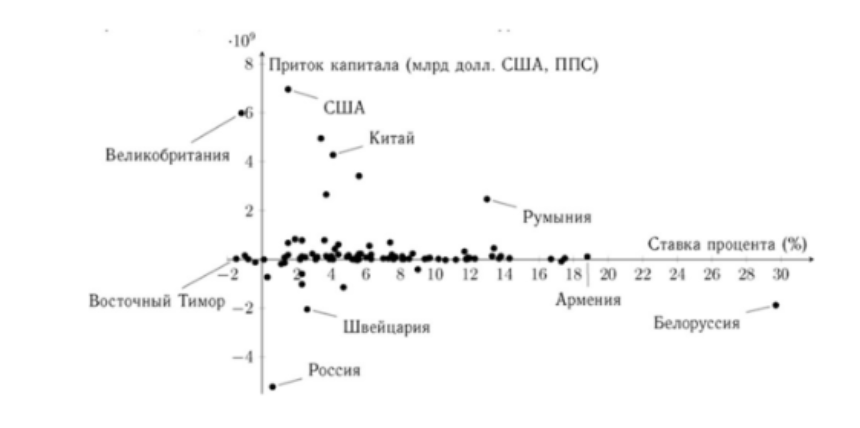
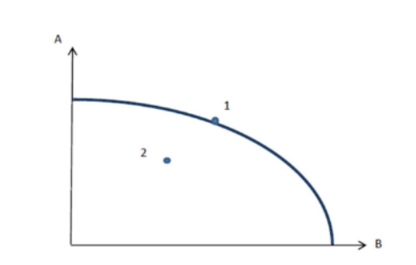

Концепции и математика, стимулы и поведение человека
1.1. Что изучает экономика и почему это интересно?
В экономике (как и в футболе) разбираются все. Но немногие могут дать точный ответ на вопрос, что именно изучает эта наука.
Экономическая теория (Economics) — это фундаментальная наука, изучающая поведение человека в условиях ограниченных ресурсов.
Сама проблема ограниченности (scarcity) является первопричиной любого экономического выбора. Экономика дистанцируется от психологии и социологии, подчеркивая свой фокус: она изучает, как люди принимают рациональные решения для достижения своих целей при наличии ограничений - когда им не хватает денег, физического капитала, информации или времени.
С давних времен люди стали замечать, что определенное поведение приводит к лучшим результатам. Например, в рамках древнейшего торгового пути «из варяг в греки» северные скандинавские страны не пытались производить оливковое масло, а обменивали свою шерсть и меха на специи из Византии. Это историческое наблюдение лежит в основе концепции сравнительного преимущества. Из подобных размышлений вытекает центральная идея экономического анализа — оптимизация: как достичь желаемых целей наиболее эффективным способом.
Главное в экономике — это человек. Фирмы, государство, рынки, политические партии — это не безликие механизмы. По своей сути, это всё те же люди, которые взаимодействуют друг с другом. Вся эта сложная архитектура держится на системе правил и контрактов — институтах.
Методология экономики: Концепции и Математика
Экономика пытается понять, как устроен мир, используя для этого строгую методологию:
- Введение концепций. Концепции — это абстрактные идеи для описания явлений окружающего мира. В физике это «сила тяготения», в биологии — «гены». В экономике одной из наиболее удачных концепций стали спрос и предложение. В реальности их не существует, есть лишь живые покупатели и продавцы, но эта придуманная абстракция оказалась настолько удачной, что вошла в наш повседневный язык.
- Связь концепций с математикой. Словесные определения уязвимы: определяя одни слова через другие, легко попасть в ловушку бесконечного цикла. Математика лишена этого недостатка благодаря системе строгих аксиом. Устанавливая связь между концепциями (спросом) и математикой (функциями), экономист получает возможность делать строгие логические переходы. Именно поэтому теорию Карла Маркса часто не считают строго научной — в ней нет математического аппарата, позволяющего поймать автора на логической ошибке при выводах.
-
Генерация нетривиальных инсайтов посредством математического аппарата. Прогностическая сила теории определяется её способностью адекватно интерпретировать наблюдаемые феномены и формулировать нетривиальные выводы. Чтобы избежать методологических ошибок, эти заключения должны базироваться на строгих логических переходах, реализуемых через математическое моделирование. В рамках данного подхода устанавливается жесткая связь между абстрактными концепциями и формальными структурами. Высокая степень корреляции полученных результатов с эмпирическими данными служит верификацией качества модели, раскрывая скрытые закономерности, недоступные для обычного житейского восприятия.

Математический аппарат обеспечивает экономической теории необходимую интеллектуальную жесткость. По сути, любая экономическая теория представляет собой мост между абстрактными концепциями и строгими уравнениями, формируя аналитическую программу исследования мира. Одно и то же явление может порождать множество конкурирующих взглядов: так, в современной науке сосуществуют десятки альтернативных теорий фирмы и моделей экономического роста, различающихся набором аксиом и глубиной формализации.
Ценность теории заключается в ее способности генерировать нетривиальные выводы, скрытые от поверхностного взгляда. Классический пример — использование концепций спроса и предложения. Облекая их в форму математических функций, экономист обнаруживает фундаментальное свойство рынка — стремление к равновесию. Для его поиска достаточно решить систему уравнений, где точка пересечения графиков укажет на оптимальные параметры цены и объема.

Эффективность модели подтверждается тем, насколько точно ее логические выводы коррелируют с эмпирическими данными. Это позволяет не просто описывать статус-кво, но и предсказывать реакцию системы на внешние шоки. Экономическая прогностика фокусируется не на гадании о будущем курсе валют, а на анализе причинно-следственных связей: например, как именно изменятся стимулы агентов при переходе к режиму плавающего курса.
Каждая школа мысли строит свой «идеальный мир», намеренно упрощая реальность ради ясности анализа. Подобно физикам, изучающим движение в вакууме, экономисты прибегают к моделированию, чтобы отсечь информационный шум и сосредоточиться на главных рыночных механизмах.
Экономическая модель — это лаконичная репрезентация сложного процесса, превращающая интуитивные догадки в проверяемые математические конструкции.
Модель практически всегда воплощается в наборе уравнений. Их решение дает те самые инсайты о поведении рынков, которые невозможно получить путем простого житейского наблюдения.
Нобелевский лауреат Милтон Фридман подчеркивал, что реализм предпосылок вторичен по сравнению с прогностической силой. Если упрощенная модель точно описывает последствия государственной политики, она становится незаменимым инструментом для принятия управленческих решений.
В этом и кроется высшая цель моделирования: через выделение значимых факторов объяснить хаос окружающего мира и спрогнозировать, как изменятся траектории развития под влиянием новых правил игры.
Индукция, дедукция и эмпирические ловушки
Экономические модели упрощают реальность. Как идеальный газ в физике лишен сил трения, так и базовая экономическая модель описывает упрощенные условия. Однако цель модели — не скопировать реальность 1-в-1, а сделать прогноз последствий определенного действия (например, перехода к плавающему курсу валюты) в рамках рассматриваемой модели с определенными предпосылками.
Подобно тому как концепция «идеального газа» в физике игнорирует силы трения между молекулами для вывода базовых законов, экономическая модель отсекает информационный шум или наличие транзакционных затрат, чтобы сосредоточиться на главных рыночных механизмах. Цель моделирования заключается не в зеркальном копировании реальности, а в создании надежного инструмента для прогнозирования последствий конкретных действий, например, изменения государственной политики или введения новых правил игры.
Экономические модели намеренно упрощают реальность ради ясности анализа. В экономической науке выделяют два фундаментальных методологических подхода к построению моделей:
- Индуктивный метод (от наблюдений к теории): Исследователь аккумулирует эмпирические данные и выявляет статистические зависимости. Данный подход базируется на анализе временных рядов, которые позволяют фиксировать корреляции между переменными, такими как доход и потребление. Однако индукция несет в себе серьезные методологические риски:
- Проблема «черного лебедя»: Никакое количество наблюдений за белыми лебедями не гарантирует отсутствия черных. В экономике это означает, что выявленные в прошлом закономерности могут мгновенно разрушиться при изменении контекста.
- Смешение корреляции и причинности: Статистическая связь не раскрывает внутреннюю природу явлений. Например, классическая Кривая Филлипса зафиксировала связь инфляции и безработицы, но попытка правительств использовать ее как инструмент привела к стагфляции, так как агенты изменили свое поведение.
- Дедуктивный метод (от теории к наблюдениям): Ученый вводит систему аксиом (например, о рациональности агентов), строит логически непротиворечивую модель с помощью математического аппарата, а затем тестирует полученные гипотезы на реальных данных. Этот процесс верификации называется эконометрикой — дисциплиной на стыке экономики и статистики. Дедукция обеспечивает интеллектуальную жесткость теории, позволяя избежать лингвистических ловушек и получать нетривиальные инсайты, скрытые от житейского восприятия. Тем не менее, и здесь существует опасность создания «кабинетных» моделей, которые безупречны логически, но крайне плохо согласуются с эмпирической реальностью.
Современная экономическая мысль стремится к синтезу этих методов, используя математику как мост между абстрактными концепциями и наблюдаемыми феноменами, что превращает интуитивные догадки в проверяемые научные конструкции.
Подробнее про эмпирические ловушки (ошибки индукции)
Индукция базируется на эмпирическом анализе: исследователь фиксирует динамику экономических показателей в долгосрочной перспективе, аккумулируя статистические данные. Формирующиеся временные ряды позволяют выявлять устойчивые корреляции между переменными. Например, если траты домохозяйств синхронно увеличиваются вместе с их благосостоянием, индуктивная модель зафиксирует прямую связь потребления и доходов. Однако методологическая уязвимость таких конструкций очевидна: они констатируют факт, но не раскрывают его внутреннюю природу. Неясно, является ли доход детерминантой потребления или наоборот. Велика вероятность, что оба процесса управляются латентными факторами, изменение которых может мгновенно разрушить выявленную закономерность.
Следовательно, никакая выборка не гарантирует абсолютной прогностической силы в будущем — это классическая проблема индукции, определяющая переход от частного опыта к универсальным суждениям. Ежедневное наблюдение за однотипными явлениями (например, встреча с белыми птицами) формирует убеждение, что иные варианты невозможны. Подобно тому, как житель мегаполиса может ошибочно экстраполировать климатические особенности своего региона на всю планету, индуктивное знание всегда страдает асимметрией. Даже бесконечное число подтверждающих фактов не доказывает теорию окончательно, но единственный контрпример полностью её аннигилирует. В эпистемологии этот феномен известен как проблема черного лебедя.
До открытия Австралии европейская наука пребывала в уверенности об исключительной белизне лебедей, поскольку вековой опыт не давал иных оснований. Почему же тогда экономисты продолжают использовать обобщение фактов? В отсутствие универсальной «теории всего» иногда необходимо позволять данным «говорить за себя». Но это требует предельной осторожности: ключевой ловушкой остается смешение корреляции и причинно-следственной связи. Эта методологическая ошибка настолько критична, что заслуживает детального препарирования в рамках вводного курса. Корреляция лишь фиксирует параллелизм в поведении двух величин: их совместный рост или разнонаправленное движение. Обнаружение такой статистической зависимости часто порождает ложную уверенность в наличии детерминизма, что ведет к катастрофическим аналитическим провалам. Истинная каузальность может отсутствовать вовсе либо иметь инвертированный характер. Но чаще всего две рассматриваемые переменные испытывают влияние третьей скрытой переменной (или набора скрытых от внимания переменных), которые и обуславливают истинную причинно-следственную связь, в то время как между рассматриваемыми переменными причинности нет.
При анализе данных не только обыватели (а часто и академические ученые, публикующие статьи в научных журналах) часто совершают фатальные ошибки, путая корреляцию с причинно-следственной связью.
Пример 1: Ошибка индукции и Кривая Филлипса
Анализируя данные по экономике Англии, О. Филлипс эмпирически установил отрицательную зависимость между инфляцией и безработицей. Правительства решили: достаточно напечатать больше денег (повысить инфляцию), и безработица упадет. Но как только агенты поняли это поведение, они изменили свои ожидания. Работники потребовали роста зарплат, а фирмы повысили цены. В результате безработица осталась высокой, а инфляция взлетела до небес (стагфляция). Индуктивная модель перестала работать, когда люди изменили свое поведение.

Найденная зависимость скорее была не теоретической, а индукционной (то есть основанной на наблюдениях). Тем не менее, она была взята на вооружение правительствами Англии и США, которые при проведении экономической политики стали делать выбор между инфляцией и безработицей. Казалось, что для решения экономических проблем достаточно напечатать больше денег. Тогда экономическая активность вырастет и безработица упадет. Инфляция, конечно вырастет, но это будет меньшим злом, чем высокая безработица. Так все выглядело, по-крайней мере, в теории. Но подобная связь, как это обычно бывает, существует до тех пор, пока экономические агенты придерживаются определенного поведения. Как только агенты меняют поведение, ранее существовавшие закономерности разбиваются в прах. Так и произошло, когда развитые страны столкнулись одновременно с ускоряющейся инфляцией и безработицей.
Экономические модели можно строить от наблюдений к обобщениям. Это индукционный способ, и он содержит проблему «черного лебедя». Занимаясь такого рода моделированием, нужно быть очень аккуратным с установлением причинно-следственных связей. Мы часто хотим поставить ее там, где ее нет. Мы часто хотим установить причинную связь там, где есть просто корреляция.
Пример 2: Смещение отбора (Selection Bias)
Курсы подготовки к ЕГЭ рекламируют: «Средний балл наших выпускников — 89, а тех, кто не ходил на курсы — 68. Эффект налицо!». Ошибка кроется в смещении отбора: на платные курсы изначально идут более мотивированные, целеусутрмленные и обеспеченные ученики. Нельзя с уверенностью сказать, что именно курсы дали им эти 89 баллов — возможно, их личная дисциплина привела бы к такому же результату. Например, более умные ученики одновременно являются и более энергичными, и в принципе, ходят на такие курсы. А менее умные одновременно являются и более ленивыми и на них не ходят. Или же, на курсах вполне могло быть вступительное испытание, которое отсеивает менее умных. Наконец, более умные ученики могли оказаться на курсах в силу случайных факторов.
«Смещение отбора» - явление, заключающееся в смещенных характеристиках наблюдаемой выборки. Из-за смещения характеристик, которое могло произойти из-за ненаблюдаемых факторов, нельзя сделать достоверных выводов, касающихся влияния наблюдаемых факторов на эту выборку.
Пример 3: Ошибка аналитика в условиях малых данных
Начинающий маркетолог Сергей имел данные по продажам товара А: в 2006 году по цене 275 тыс. руб. купили 730 тыс. штук, а в 2007 году по цене 267 тыс. руб. — 770 тыс. штук.
| Средняя цена А, тысяч рублей | Количество продаж А, тысяч в год | |
|---|---|---|
| 2006 | 275 | 730 |
| 2007 | 267 | 770 |
В рамках бизнес-кейса перед аналитиком стояла задача спрогнозировать рыночную емкость продукта А на 2010 год при установлении цены в 250 тысяч денежных единиц.
Сергей провел прямую линию через две точки и сделал прогноз на 2010 год. Опираясь на эмпирические данные, Сергей вывел линейную функцию спроса $Q = 2105 - 5P$, сделав вывод, что при снижении средней цены до 250 тысяч рублей реализация достигнет отметки в 855 тысяч единиц ежегодно.
Проанализируем методологические искажения, допущенные маркетологом при интерпретации данной модели.
Анализ решения: Сергей, экстраполируя учебные примеры на реальный рынок, применил упрощенную линейную аппроксимацию к динамическим процессам. Безусловно, формальная логика соблюдена — расчет функции через разность координат выполнен без арифметических искажений, и подстановка целевых параметров дает искомый результат $Q = 855$ тысяч. Однако с точки зрения фундаментальной теории, попытка построить жесткую зависимость всего по двум точкам является крайне уязвимой.
Во-вторых, отсутствуют основания полагать, что поведенческая модель покупателей описывается именно линейным уравнением; эмпирический опыт часто демонстрирует гиперболические зависимости. Во-вторых, использование данных за 2006 и 2007 годы игнорирует фактор сдвига кривой спроса. За этот период могли радикально измениться доходы населения или стимулы агентов, что делает невозможным объединение этих наблюдений в одну функцию. В-третьих, попытка прогнозирования на 2010 год без учета текущего макроэкономического контекста и новых входящих данных является методологическим провалом. Старая модель не способна адекватно предсказать реакцию системы на будущие шоки, так как она полностью игнорирует эволюцию рыночных институтов и изменение структуры предпочтений.
Ошибки Сергея:
- Нет гарантии, что спрос линеен (это могла быть гипербола).
- Данные за разные годы отражают совершенно разные рыночные условия (доходы населения могли вырасти).
- Экстраполировать данные 2007 года на 2010 год без учета контекста (например, надвигающегося кризиса) — методологический провал.
1.3. Рациональность и Поведенческая экономика
В основе базовых экономических моделей лежит Homo Economicus (человек экономический). Это индивид, который имеет ясные цели, обладает информацией и мгновенно принимает оптимальные решения.
Но в реальности люди подвержены эмоциям, депрессиям и когническим искажениям. Изучением отклонений от рациональности занимается Поведенческая экономика. Рассмотрим типичные психологические ловушки:
- Игнорирование альтернативных издержек. Выбор стоять в пробке вместо поездки на метро, не оценивая скрытую стоимость потерянного в пробке времени.
- Учет невозвратных издержек (Sunk Cost Fallacy). Студент на 3-м курсе понимает, что хочет быть актером, но решает доучиться на экономиста, потому что «жалко потраченных трех лет».
- Тяга к справедливости. В игре «Ультиматум» люди отказываются от выгодных, но "несправедливых" предложений, предпочитая оставить оппонента (и себя) ни с чем.
Несмотря на эти искажения, предпосылка о рациональности остается фундаментальной базой, так как позволяет предсказать самое важное: как люди будут реагировать на стимулы.
🐍 Практикум: Сила стимулов и «Эффект кобры»
Экономический механизм, не учитывающий стимулы людей, обречен на провал. В начале XX века правительство в Индии решило сократить популяцию ядовитых кобр, назначив премию за каждую принесенную голову змеи. Попробуйте управлять этой политикой в симуляторе ниже.
Примеры рационального поведения
Пример 1: Магазин у дома
Ситуация: Человек покупает продукты в дорогом магазине у дома, хотя мог бы поехать в Ашан на окраине города и купить там на 20% дешевле. Рационально ли он поступает?
Ответ: скорее всего да, поскольку поездка в Ашан требует времени. Скорее всего, этот человек оценивает свое время дорого, и именно поэтому предпочитает покупать дорогие продукты у дома, а не тратить время на дорогу в Ашан.
Пример 2: Благотворительность
Ситуация: Человек получает на работе солидный бонус по итогам года и решает все полученные деньги потратить на благотворительность. Рационально ли он поступает?
Ответ: скорее всего да, поскольку в системе ценностей этого человека благотворительность занимает значимое место. Возможно, ощущения счастья этого человека, когда он жертвует на благотворительность, выше, чем когда он тратит деньги на себя.
Пример 3: Лотерейный билет
Ситуация: Человек покупает лотерейный билет, хотя знает, что вероятность выигрыша очень и очень мала. Поступает ли он рационально?
Ответ: Да. Этот человек склонен к риску. Он предпочитает рискнуть небольшой ставкой для того, чтобы получить возможный солидный выигрыш. Другие люди менее склонны к риску и поэтому не покупают лотерейные билеты.
Рассмотрим жажду как базовый стимул. Покупка бюджетной бутилированной воды — это классический пример рационального выбора ради базовой потребности. Однако заказ дорогостоящего коктейля в фешенебельном заведении не менее рационален: в этом случае агент максимизирует полезность не от гидратации, а от эстетики сервиса, уникального вкуса и символического потребления своего статуса. Даже участие в лотерее с отрицательным матожиданием вписывается в модель Homo Economicus, если индивид изначально склонен к риску. Данный аспект подробно анализируется в теории выбора в условиях неопределенности. Тем не менее, системная ошибка при сравнении вероятностей (например, выбор шанса 1/20000 вместо 1/10000 при равных издержках) уже является признаком когнитивного искажения, выводящего поведение за рамки строгой рациональности.
Несмотря на эти искажения, предпосылка о рациональности остается фундаментальной базой. Почему? Потому что она позволяет предсказать самое важное: как люди будут реагировать на стимулы.
Основываясь на принципах микроэкономики, мы исходим из того, что фирмы (организаторы концертов, рестораны) действуют рационально. Их главная цель — максимизация совокупной прибыли. Если их поведение кажется нам нелогичным (например, отказ от повышения цен при дефиците или раздача бесплатных продуктов), значит, мы упускаем из виду скрытые стимулы или смежные рынки, на которых они зарабатывают. Давайте разберем две задачи с помощью интерактивных моделей.
Экономический анализ: Разбор кейсов
Применение концепций рациональности и стимулов к реальным ситуациям
Задача 1: Орешки в ресторане
Многие рестораны предлагают орешки к столу бесплатно, тогда как бутылка простой воды стоит достаточно дорого. И это при том, что затраты ресторана на орешки существенно превышают затраты на воду. Ведут ли себя рестораны нерационально таким образом?
Подсказка: как поведение посетителя ресторана будет отличаться в случае, когда он пьет бесплатную воду, и в случае, когда он ест соленые орешки?
Ответ:
Действия ресторанов абсолютно рациональны. Соленые орешки и платные напитки (например, алкоголь) — это взаимодополняющие блага (комплементы). Орешки вызывают жажду, искусственно повышая спрос на напитки, которые и приносят ресторану основную прибыль. При этом обычная вода является товаром-заменителем (субститутом) для платных напитков. Устанавливая высокую цену на воду, ресторан лишает клиента возможности дешево утолить жажду, направляя его выбор в пользу высокомаржинальных позиций из барного меню.
Симулятор: Вода и орешки в баре
Задача 2: Парадокс билетов на концерт
Организаторы концертов известных исполнителей намеренно не поднимают цены на билеты. В результате среди поклонников нередко выстраиваются многокилометровые очереди из желающих купить билеты. Иногда около мест продаж билетов даже возникают палаточные городки, люди проводят в очереди несколько дней, лишь бы достать билет на желаемый концерт. Но билетов все равно не хватает всем. В этих условиях понятно, что организаторы могли бы поднять цены на билеты, и все билеты все равно были бы проданы. Но они не поднимают цены. Поступают ли они рационально?
Ответ:
Действия организаторов полностью вписываются в модель рационального поведения. Их стратегия направлена на максимизацию не сиюминутной выручки, а совокупной долгосрочной прибыли. Анализ данной ситуации требует обращения к концепциям альтернативных издержек и теории взаимодополняющих благ.
- Селекция аудитории. Необходимость стоять в очередях выступает в роли неденежной цены. Этот механизм отсеивает агентов с высокой стоимостью времени и оставляет наиболее лояльных приверженцев, чьи альтернативные издержки ожидания ниже, чем ценность посещения мероприятия.
- Стимулирование потребления комплементарных благ. Фанаты, получившие «дешевый» входной билет, демонстрируют более высокую готовность платить за сопутствующую продукцию. Основная маржа извлекается за счет продажи мерчендайзинга и продуктов питания внутри концертной площадки.
- Маркетинговое сигнализирование. Ажиотаж и дефицит — это мощный сигнал рынку о сверхпопулярности артиста. Созданный социальный капитал конвертируется в устойчивый спрос на будущие туры и рост капитализации личного бренда исполнителя.
Симулятор: Выручка с билетов и мерча
Задача 1: Опоздания в детских садах
▼В израильских детских садах существовала проблема: родители постоянно опаздывали забирать детей вечером. Руководство придумало экономический способ решения проблемы: теперь при опоздании родители подвергаются небольшому денежному штрафу. Вопреки ожиданиям, количество опозданий существенно возросло. Опираясь на стимулы людей, объясните, почему это произошло?
🏎️ Парадокс ремней безопасности (Эффект Пельцмана)
При введении обязательных ремней безопасности экономисты построили модель: водитель выбирает скорость, максимизируя свое благосостояние F = X - Y , где X — экономия времени (выгода от скорости), а Y — издержки дополнительного риска.
Ремень безопасности объективно спасает жизни водителей, но он снижает параметр индивидуального риска Y. Следовательно, предельная прибыль от быстрой езды растет. Что сделает рациональный водитель? Он ответит на это компенсирующим поведением: начнет ездить менее осмотрительно (быстрее), чтобы снова достичь точки максимума своего благосостояния. В результате количество аварий возрастает, и, хотя сами водители выживают благодаря ремням, количество жертв среди незащищенных пешеходов существенно увеличивается.
Симулятор: Выбор оптимальной скорости
Оптимум достигается на вершине кривой благосостояния
1.4. Конкуренция и Принцип безразличия
Считается, что экономика как системная наука началась с Адама Смита в 1776 году. Он задался вопросом: как хаотичное поведение эгоистичных людей приводит к слаженной работе механизма обеспечения общества товарами? Конкуренция приводит к поразительным результатам, один из которых — Принцип безразличия.
В конкурентной экономике, где нет издержек переключения, все варианты выбора становятся равнозначными с точки зрения совокупности параметров.
- Риск и зарплата. Профессия шахтера опаснее профессии дворника. Если зарплаты равны, все уйдут в дворники. Дефицит шахтеров заставит работодателей повышать им зарплату до тех пор, пока предельному работнику не станет безразлично, какую профессию выбрать (риск полностью компенсируется финансовой премией).
- Инвестиции. Ставки процента (доходность) в развивающихся странах (Румыния, Армения) всегда выше, чем в развитых (США, Великобритания). Это премия за политические и экономические риски. Если бы ставки были равны, весь капитал утек бы в США.
- Болезнь издержек Баумоля (Baumol's cost disease). За 100 лет производство автомобилей ускорилось в сотни раз благодаря станкам (рост производительности), и зарплаты инженеров выросли. Но парикмахеры или учителя сегодня тратят на услугу столько же времени, сколько и в XIX веке! Почему же стрижка или образование дорожают быстрее инфляции? По принципу безразличия: если парикмахерам не повышать зарплату вслед за инженерами автозаводов, они просто уйдут на заводы. Чтобы удержать их, салоны красоты вынуждены поднимать зарплаты, перекладывая эти издержки в цену стрижки для конечного потребителя.
- Официанты и чаевые. Если общество внезапно начнет оставлять в два раза больше чаевых, обогатятся ли официанты? Нет. Сверхдоходы привлекут в профессию толпы людей. Рестораторы, видя очередь из желающих работать, понизят базовую ставку зарплаты ровно на размер чаевых. Экономическая выгода официантов вернется к нулю, а чаевые трансформируются в более низкие цены в меню ресторанов.
Следствие Принципа безразличия: Положительную экономическую прибыль (выгоду с учетом альтернативных издержек) могут получать только обладатели уникальных, невоспроизводимых талантов, технологий или ресурсов. Для всех остальных экономическая прибыль в долгосрочном периоде стремится к нулю.
Например, если в экономике есть 2 профессии, и одна из них сопряжена с большим риском для здоровья и жизни (например, шахтеры), то она должна предусматривать большую заработную плату (чем, например, дворники). Если зарплаты будут одинаковыми, то более рискованную профессию просто никто не выберет. Индивиды начнут покидать профессию шахтеров в пользу менее рискованную – профессии дворника. В результате предложение труда шахтеров будет сокращаться, а дворников расти. В результате этих изменений труд шахтеров станет более дефицитным, и зарплата шахтеров будет расти относительно зарплаты дворников до тех пор, пока очередному индивиду не станет все равно – идти в более рискованную профессию шахтера за большую зарплату, или же идти в менее рискованную профессию дворника за меньшую зарплату. Профессии шахтера и дворника уравнялись с точки зрения двух параметров – риска и вознаграждения.
Другой пример. Ставка процента (которая означает доходность размещения средств) традиционно более высокая в таких странах, как Белоруссия, Армения или Румыния, и более низкая в таких странах как США или Великобритания. При этом притоки капитала в эти страны все равно ниже, чем в США и Великобританию.

(Данные за 2008 г)
Как можно объяснить такую зависимость? Нужно вспомнить про качественное различие между перечисленными странами. Белоруссия, Армения, Румыния могут быть причислены к развивающимся экономикам. Политический климат в этих странах не является таким стабильным и благоприятным для инвестиций, как у США или Великобритании. Размер финансового рынка у этих стран на порядки ниже, чем у США или Великобритании. Все вышесказанное можно свести к тому, что инвестиции в развивающиеся экономики, такие как Белоруссию, Армению, или Румынию, сопряжены с повышенными рисками. Если бы эти страны имели такую же ставку процента (что означает доходность вложений), как США или Великобритания, - в них бы просто никто не инвестировал. В результате, более высокая ставка является премией за больший риск инвестирования в эти экономики. По принципу безразличия, развитые экономики (США, Великобритания) и развивающиеся экономики (Белоруссия, Румыния и т.д.) уравнялись с точки зрения инвестиционной привлекательности и доходности.
Еще один пример: производительность труда и научно-технический прогресс
Влияние технологического прогресса на экономику носит гетерогенный характер, радикально различаясь в зависимости от специфики отрасли. Рассмотрим классическую дихотомию: если в автомобилестроении автоматизация сократила трудозатраты на единицу продукции в десятки раз по сравнению с прошлым веком, то сфера персональных услуг осталась консервативной. Современный мастер-парикмахер физически не способен увеличить дневную норму обслуживания в прогрессии, сопоставимой с промышленным конвейером, сохраняя те же временные лимиты, что и сто лет назад.
В связи с этим возникают следующие аналитические вопросы:
- Каким образом научно-технический прогресс (НТП) трансформировал производственные функции в данных секторах и почему возникла столь резкая асимметрия в производительности труда?
- Проанализируйте аргументацию экономистов, связывающих данный феномен с опережающим ростом стоимости социально значимых благ, таких как медицина и высшая школа, относительно общего уровня инфляции.
- Цифровизация образования и переход к онлайн-моделям позволяют лекторам масштабировать аудиторию без привязки к физическим ограничениям кампуса. Опираясь на изложенную логику, спрогнозируйте, как подобные инновации повлияют на ценовую динамику в образовательном секторе в долгосрочной перспективе.
Экономический анализ и решение:
А) Глубинная суть НТП в промышленности заключается в резком росте капиталовооруженности. Внедрение станков и автоматики превращает труд в высокопродуктивный фактор. Оператор современной техники демонстрирует кратную эффективность по сравнению с ручным трудом прошлого. Конкуренция фирм за таких ценных агентов неизбежно провоцирует рост реальных зарплат, синхронизированный с их выработкой.
Б) Отрасли с низкой восприимчивостью к автоматизации (образование, сервис) не могут продемонстрировать аналогичного взлета продуктивности. Согласно принципу безразличия, для предотвращения массового исхода кадров в высокотехнологичные сектора работодатели вынуждены повышать зарплаты учителям и врачам вслед за рыночным трендом. Поскольку этот рост доходов не подкреплен реальным увеличением выработки, он полностью транслируется в конечную стоимость услуг. В эпистемологии экономики это известно как болезнь издержек, объясняющая, почему чеки в этих сферах растут быстрее индекса потребительских цен.
В) Развитие веб-технологий выступает как внедрение интеллектуального капитала в деятельность преподавателя, аналогично промышленным станкам. Масштабируемость онлайн-лекций позволяет резко повысить предельную производительность труда лектора. Это создает условия для стабилизации цен: рост вознаграждения преподавателей теперь может компенсироваться объемом аудитории, что нивелирует необходимость перманентного удорожания услуг относительно общего инфляционного фона.
Следствия Принципа безразличия
Принцип безразличия имеет 2 важных следствия:
- Если вы не обладаете уникальными ресурсами (уникальной информацией, или же уникальными предпочтениями), то вы не сможете получить экономическую выгоду (экономическую прибыль). Экономическая выгода любого вашего занятия будет равна нулю. Экономическая выгода (прибыль) – это выгода (прибыль) с учетом альтернативных возможностей.
- Только обладатели неординарных способностей или предпочтений могут иметь экономическую выгоду.
Как это работает, удобно пояснить на примере.
Вы являетесь одним из миллионов офисных работников в конкурентной экономике, которые работают за стандартную заработную плату, скажем, 30 тысяч долларов в год. Однажды Вы узнаете, что можете открыть собственный бизнес по производству плюшевых мишек, который будет приносить вам 40 тысяч долларов в год, и эта информация является общедоступной. Стоит ли вам уходить с работы для того, чтобы продавать плюшевых мишек?
Ответ: Вам должно быть все равно. Давайте попробуем провести цепочку рассуждений. Если все офисные работники узнают, что можно продавать плюшевых мишек, и это приносит больше, чем 30 тысяч долларов в год, то они будут заниматься именно этим. Они ринутся открывать фирмы и продавать мишек. В результате избыточное предложение мишек на рынке быстро опустит их цену до такого уровня, когда работникам уже станет невыгодно покидать офис ради деятельности по продаже плюшевых мишек. А это произойдет, только если прибыль от плюшевых мишек будет такой же, как и заработная плата в офисе, то есть ровно 30 тысяч долларов в год. Тогда офисным работникам будет безразлично, работать в офисе или заниматься продажей мишек. От того, что офисные работники узнали про возможность продавать мишек, им стало не лучше и не хуже. Статус-кво сохранился.
Если же вам известна такая технология производства мишек, которая будет приносить, скажем 50 тысяч долларов в год, и она является уникальной (в том смысле, что ее не могут скопировать другие индивиды), то вы уже сможете получать экономическую выгоду от производства мишек, и вам уже не будет безразлично, работать в офисе или идти делать мишек.
🦁 Кейс: Иллюзия бесплатного зоопарка
Нет, указ не улучшит положение жителей. Напротив, для общества в целом ситуация ухудшится. Это классическая иллюстрация «Принципа безразличия» и концепции «чистых общественных потерь» (deadweight loss).
- Когда явная цена падает до нуля, спрос возрастает. Возникает дефицит. Появляется новая "цена" — время стояния в очереди.
- Принцип безразличия: Жители будут занимать очередь до тех пор, пока стоимость их потерянного времени не сравняется со старой ценой билета (100 рублей).
- Раньше 100 рублей переходили от жителя к бизнесу (трансферт). Теперь эквивалент 100 рублей просто безвозвратно сгорает в очереди. Общество становится беднее.
Симулятор структуры издержек посетителя
Задача 2: Уникальность и Прибыль
▼В Силиконовой деревне Стив Ж. — хороший программист, но слабый организатор: он не так хорошо, как конкуренты, умеет использовать навыки работников для получения максимальной прибыли. В один прекрасный день к Стиву прилетела Фея: «Я могу прямо сейчас совершенно бесплатно повысить уровень квалификации всех твоих подчиненных. Согласен?» Подумав минуту, Стив ответил: «Нет. Если ты сделаешь это, моя прибыль в итоге только уменьшится». Экономический анализ позволяет понять, что слова Стива правдоподобны. Почему?
Представленные кейсы иллюстрируют фундаментальный механизм: в условиях совершенной конкуренции и отсутствия барьеров для входа любые альтернативные траектории становятся равнозначными.
Если определенная сфера деятельности начинает приносить избыточную полезность, поток рациональных агентов мгновенно устремляется в этот сегмент. Этот процесс продолжается до тех пор, пока возникший арбитраж не будет полностью исчерпан, а уровни благосостояния — уравновешены.
Так, если типичный клерк обнаружит доступную нишу в малом бизнесе, рыночные силы быстро скорректируют доходность этого предприятия до уровня средней офисной зарплаты. В точке равновесия индивиду становится абсолютно безразлично, оставаться ли наемным сотрудником или становиться предпринимателем.
Аналогично, отмена платы за вход в городской парк не повышает уровень счастья горожан в долгосрочном периоде. Возникающие очереди монетизируют доступ через временные затраты, при этом альтернативная стоимость ожидания в точности компенсирует исчезнувшую денежную цену билета.
Из этого вытекает ключевое аналитическое следствие: устойчивое извлечение экономической выгоды доступно лишь тем, кто контролирует уникальные ресурсы, специфические таланты или эксклюзивную информацию.
Рядовой участник рынка, лишенный невоспроизводимых преимуществ, обречен на доходность, не превышающую результаты в любой иной стандартной деятельности. Прибыль в производстве массового товара будет строго соответствовать уровню оплаты труда в корпоративном секторе.
Следовательно, в таких обстоятельствах экономическая прибыль (прибыль, рассчитанная за вычетом всех альтернативных издержек), неизбежно обнуляется.
Лишь обладание секретной технологией или иным скрытым от конкурентов активом позволяет агенту временно вырваться из этой ловушки. В этом случае его финансовый результат превысит доходы от типовой занятости, формируя положительный чистый остаток.
Важно помнить, что экономическая прибыль — это не просто разница между доходами и расходами, а превышение прибыли над всеми упущенными возможностями.
В теоретической конструкции «идеальной экономики», где принцип безразличия реализуется в полной мере, любая деятельность характеризуется нулевой экономической прибылью ввиду абсолютной эквивалентности всех доступных опций.
Подобно этому, рост вознаграждения обслуживающего персонала вследствие внезапного увеличения среднего размера вознаграждения со стороны гостей возможен исключительно при наличии исключительных профессиональных компетенций и личного магнетизма сотрудника. Когда повышенные выплаты адресованы персонально официанту Ивану, а не распределяются диффузно по всей отрасли, мы имеем дело с проявлением монопольной власти.
В данной парадигме специфический актив индивида трансформируется в устойчивую экономическую прибыль, превышающую среднерыночные показатели.
Однако аналитический аппарат принципа безразличия раскрывает и более пессимистичный сценарий: отсутствие четко специфицированных прав собственности на дефицитный ресурс ведет к полной аннигиляции потенциальной выгоды. Вернемся к кейсу с городским садом. Переход от частного владения к бесплатному муниципальному режиму уничтожает финансовый результат собственника, но не делает конечных потребителей богаче. Механизм ценового регулирования замещается временным обременением: избыток спроса порождает затяжные очереди. С точки зрения экономической теории, такая децентрализация полезности деструктивна, поскольку ресурс «сгорает» в процессе ожидания, не принося профита ни одной из сторон. Именно поэтому институциональный дизайн и защита интересов владельцев являются приоритетными для академического сообщества. Более детальную деконструкцию данных процессов мы проведем при изучении главы, посвященной общественным благам.
Кейс для самостоятельного анализа: Дилемма Стива Ж.
▼В ИТ-кластере «Силиконовая деревня» конкурируют несколько софтверных компаний. Один из игроков, Стив Ж., признан талантливым разработчиком, но крайне неэффективным менеджером. Его неспособность грамотно выстраивать бизнес-процессы и конвертировать потенциал персонала в финансовый результат приводит к стагнации операционной прибыли. Внезапно Стиву предлагают безвозмездное и мгновенное повышение квалификации всей его команды программистов. «Это уникальный шанс: либо сейчас, либо никогда», — заявляет инициатор сделки. Однако Стив отвергает предложение, утверждая: «Рост их навыков обернется для моей фирмы убытками». С точки зрения экономической теории, данная позиция выглядит абсолютно рациональной. Опираясь на базовые макроэкономические концепции, деконструируйте логику героя и сформулируйте систему аксиом, подтверждающих его выводы.
1.5. Эффективность по Парето и «Невидимая рука»
Эффективность по Парето — это такое состояние системы взаимодействующих сторон, в котором благосостояние одного агента нельзя увеличить, не уменьшив при этом благосостояние хотя бы одного другого.
Парадокс оленей (Дарвиновская экономика Р. Фрэнка)
Эволюция наделила оленей гигантскими рогами. Каждому отдельному самцу выгодно иметь рога чуть больше, чем у соперника, чтобы выигрывать бои за самок. Но огромные рога мешают всему стаду убегать от волков. Если бы олени могли договориться и одновременно укоротить рога всем в 2 раза, иерархия бы сохранилась, но выживаемость вида возросла бы колоссально! Это строгое Парето-улучшение. Но животные не могут заключать контракты, поэтому они заперты в неэффективном равновесии.
Люди, к счастью, умеют договариваться. Но нужен ли нам всегда координатор (Госплан, диктатор), чтобы достичь эффективности?
Теорема об эффективных затратах (MC1 = MC2)
Представьте, что фирме нужно произвести 6 бубликов. У нее есть Завод 1 (Иванов) и Завод 2 (Джонс). Предельные издержки (MC — затраты на производство каждой дополнительной единицы) у них разные:
- Иванов: 1-й бублик стоит 1 руб, 2-й — 2 руб, 3-й — 3 руб, 4-й — 4 руб.
- Джонс: производство любого бублика всегда стоит 3.5 рубля.
If плановая экономика прикажет Иванову сделать 1 бублик, а Джонсу — 5 бубликов, общие затраты составят: 1 (Иванов) + 17.5 (Джонс) = 18.5 рублей.
Можем ли мы сделать Парето-улучшение? Да. Заберем один бублик у Джонса (экономия 3.5 руб) и поручим его Иванову (затраты 2 руб). Мы сэкономили 1.5 рубля обществу!
Будем перекидывать объемы до тех пор, пока предельные издержки не уравняются (насколько это возможно при дискретных значениях). Оптимум достигается, когда Иванов делает 3 бублика (MC=3, а следующий стоил бы уже 4), и Джонс делает 3 бублика (MC=3.5). Общие затраты падают до 16.5 рублей!
В экономике Первая фундаментальная теорема благосостояния доказывает, что индивидуальный эгоизм в условиях совершенной конкуренции и гибкого ценообразования приводит к Парето-эффективным результатам. Если у нас есть два производителя с разными предельными издержками (MC), общие издержки общества будут минимизированы, если объем производства распределить так, чтобы $MC_1 = MC_2$. Рынок делает это стихийно.
🥯 Практикум: Минимизация издержек (MC1 = MC2)
Вам нужно произвести 6 бубликов. Изменяйте выпуск Иванова (выпуск Джонса изменится автоматически). Найдите распределение, при котором общие издержки (Total Cost) минимальны.
Бублики Иванова: 1 шт.
Бублики Джонса: 5 шт.
Математическое правило: Общие издержки минимизируются, если распределить производство так, чтобы предельные издержки были равны.
Самое удивительное, что конкурентному рынку не нужен приказ, чтобы решить эту задачу. Если рыночная цена бублика установится на уровне 3.5 рублей, эгоистичный Иванов сам произведет ровно 3 бублика (так как 4-й бублик обойдется ему в 4 рубля, принеся убыток). Эгоистичный Джонс также будет производить свою долю до тех пор, пока цена покрывает его издержки. Преследуя лишь собственную наживу, они стихийно решат сложнейшую макроэкономическую задачу минимизации затрат всего общества.
Это и есть Первая фундаментальная теорема благосостояния (строгое математическое доказательство «Невидимой руки» Адама Смита): конкурентное равновесие всегда является Парето-эффективным.
Математический триумф Кеннета Эрроу
Красота этой теоремы поразительна: то, что кажется интуитивно верным и легко описывается на бытовом уровне, оказалось невероятно сложным для формального доказательства. Лишь в середине XX века выдающийся экономист, лауреат Нобелевской премии Кеннет Эрроу (совместно с Жераром Дебрё) смог дать этому строгое обоснование.
Формальное утверждение теоремы (в значительно упрощенном виде) звучит так: при выполнении ряда строгих условий (полнота рынков, отсутствие экстерналий, совершенная конкуренция и локальная ненасыщаемость предпочтений) любое конкурентное равновесие по Вальрасу является Парето-эффективным.
Чтобы доказать это, Эрроу пришлось использовать передовой математический аппарат топологии и теории множеств. Он применил теоремы об отделяющей гиперплоскости, доказывая существование уникальной «общей точки» (common point) согласия — равновесия, в котором выпуклые функции предельной полезности множества агентов пересекаются в бесконечномерных товарных пространствах. Этот гениальный топологический подход концептуально очень близок к методам, которые использовал математик Джон Нэш при доказательстве своей теоремы о существовании равновесия.
Математическая элегантность мышления Эрроу проявилась и в других его фундаментальных работах. В частности, он использовал блестящую логическую конструкцию «решающего агента» (pivotal agent) для доказательства своей знаменитой «Теоремы о невозможности» (Теоремы Эрроу), математически показав, что идеальной системы демократического голосования не существует. Доказательства Кеннета Эрроу — это, пожалуй, самые выдающиеся интеллектуальные результаты современной академической экономики, раскрывающие фундаментальную природу человеческого выбора.

Графическая интерпретация Парето-улучшения
Давайте рассмотрим простой пример.
Допустим, есть два экономических агента, выборы которых позволяют получить любые комбинации благосостояния (агента A и агента B), которые лежат на графике выше.
Точка 1 является эффективной, поскольку лежит на линии, которая показывает максимальные возможности.
Если мы захотим улучшить один параметр – например, благосостояние В, то придется ухудшить другой параметр, благосостояние А. Точка 2 является неэффективной, поскольку лежит под этой линией. Это означает, что, двигаясь вправо от этой точки можно повысить благосостояние В, не уменьшая благосостояние А. Это также означает, что, двигаясь вверх от этой точки можно повысить благосостояние А, не уменьшая благосостояние В.
Когда можно сделать так, чтобы один параметр был улучшен без ухудшения другого, речь идет о том, что можно произвести Парето-улучшение. Фактически, можно даже увеличить выпуск двух товаров одновременно, если двигаться от точки 2 вправо-вверх, например до точки 1. В этом случае говорится, что можно произвести строгое Парето-улучшение.
Можно, например, представить, что на оси А – чистые выгоды курильщика, а на оси В – чистые выгоды некурильщика, находящихся в одной комнате. Когда курильщик больше курит, он получает больше выгод, но при этом некурильщик получает больше ущерба от пассивного курения. Или же можно подумать, что на оси А — выгоды государства от налогообложения, а на оси В – выгоды всего общества. Когда государство увеличивает налоги, оно увеличивает свои выгоды, при этом выгоды общества уменьшаются.
Пример: пассивное курение
Вы идете на концерт любимого исполнителя, заплатив за билет 1000 рублей. Вы приходите на концерт и к своему неудовольствию обнаруживаете, что стоящий рядом с вами человек курит (предположим, что курение в общественных местах разрешено). У вас аллергия на табачный дым, и вы оцениваете ваш ущерб от пассивного курения в 1000 рублей. Такова сумма на оплату дополнительного похода к врачу. Курильщик, который решает закурить рядом с вами, оценивает выгоды от курения на концерте всего лишь в 10 рублей. Такую ситуацию экономисты называют неэффективной. Почему? Потому что есть вариант, при котором и вы, и ваш сосед-курильщик можете произвести Парето-улучшение. Более того, есть вариант произвести даже строгое Парето-улучшение, ОДНОВРЕМЕННО улучшив ваше общее положение.
Например, вы платите курильщику 11 рублей за то, чтобы он не курил.
Он доволен, потому что получает ровно на 1 рубль больше, чем его собственные выгоды от курения. Вы довольны, потому что платите на 989 рублей меньше, чем ваш ущерб от курения. В принципе, если бы вы заплатили курильщику 999 рублей, то это также привело бы к эффективному результату. Но в том-то и дело, что, когда вы приходите на концерт, вы не можете дать курильщику деньги и попросить его не курить. Рыночная цена билета на концерт не отражает ни ваших издержек, ни выгод курильщика, то есть она не отражает информации, имеющейся у участников рынка. И в этом случае рынок для концерта, на котором можно курить, неэффективен. Причин неэффективности рынков очень много, и мы будем об этом много говорить в нашем курсе. Одна из возможных причин – это отсутствие рынков для определённых благ. Оно появляется, когда права собственности на определенное благо отсутствуют или не полностью определены.
В нашем примере отсутствующий рынок – это рынок чистого воздуха на концерте. Представим, что такой рынок существует, на нем четко определены права собственности, и чистый воздух принадлежит вашему курящему соседу. Подумайте о том, что в этом случае ваш сосед не будет курить. Это будет ему не выгодно. Если он курит, то получает выгоду в 10 рублей. Но при этом он лишается возможности продавать чистый воздух вам.
Если вы согласитесь заплатить за чистый воздух любую сумму свыше 10 рублей и меньше 1000 рублей, то воздух будет оставаться чистым. В нашем примере вы платите курильщику 11 рублей за чистый воздух. Когда такая сделка состоялась, то положение одного участника уже нельзя улучшить без ухудшения положения другого участника, и это будет эффективным равновесием.
🌬️ Практикум: Рынок чистого воздуха
Вам предстоит создать рынок там, где его не было. Вы можете предложить соседу любую сумму от 0 до 1200 рублей в обмен на отказ от курения. Найдите такой размер трансферта, при котором сделка состоится, и обе стороны останутся в выигрыше (Парето-улучшение).
1.6. Провалы рынка и Асимметрия информации
Когда ценовой механизм не отражает всю полноту информации, возникают провалы рынка. Огромный пласт неэффективностей порождает асимметричная информация — ситуация, когда одна сторона сделки знает больше о товаре, чем другая.
Классический пример — рынок подержанных автомобилей («лимонов»), исследованный Дж. Акерлофом. Продавец знает о скрытых дефектах, а покупатель — нет. Покупатель, ожидая подвоха, готов платить лишь среднюю цену. Эта цена не устраивает продавцов высококачественных авто, и они покидают рынок. Это явление называется неблагоприятным отбором (adverse selection).
🚗 Кейс: Рынок подержанных авто («Лимоны»)
Продавцы качественных машин просят минимум 1200 у.е. Продавцы дефектных («лимонов») — 500 у.е. Покупатели ценят хорошую машину в 1300, а плохую в 700. Покупатель платит средневзвешенную ожидаемую цену. Меняйте долю хороших машин, чтобы увидеть, когда рынок рухнет.
Доля хороших авто на рынке:
50%
Неблагоприятный отбор (Adverse selection) – ситуация, которая возникает на рынках с асимметричной информацией. Покупатель не может отличить качественный продукт от некачественного, и поэтому предлагает за товар низкую среднюю цену. В этих условиях продавцы некачественного товара будут иметь стимулы продавать дальше, а продавцы качественного – уходить. Результат: среднее качество товара или услуги падает со временем.
Аналогичная проблема существует на рынке медицинского страхования: полисы покупают в основном те, кто скрывает свои тяжелые болезни, что заставляет страховые компании завышать цены, вытесняя здоровых клиентов. Плюс возникает моральный риск (moral hazard): застраховав машину от ущерба, водитель перестает закрывать её на замок во дворе.
Решения проблемы асимметрии
Сигнализирование (Signaling)
Информированная сторона подает дорогостоящий сигнал. Например, диплом престижного вуза. Важность диплома для работодателя кроется не столько в знаниях, сколько в том, что кандидат прошел сложнейший фильтр, доказав свою энергичность и интеллект. Ленивый человек просто не потянет издержки на получение такого диплома. Аналогично, реклама с Марией Шараповой за гигантские гонорары — это сигнал рынку, что компания планирует работать долго и уверена в качестве продукта, иначе эти издержки никогда не окупятся.
Просеивание (Screening)
Неинформированная сторона предлагает меню контрактов. Страховая компания предлагает полис КАСКО за 100 000 руб. (полное покрытие) и за 40 000 руб. (с франшизой: первые 30 000 руб. ущерба платит клиент). Уверенные в себе профессионалы выберут дешевый полис, а новички, регулярно царапающие бамперы — дорогой. Клиенты сами проводят самоотбор (self-selection), раскрывая свой скрытый тип страховщику.
1.7. Дизайн механизмов и Аукционы
Раздел экономики, именуемый «дизайн механизмов» (mechanism design), утверждает, что эффективные институты можно создать искусственно, если правильно учесть стимулы рациональных агентов.
Дизайн механизмов (Mechanism Design) — это экономическая инженерия. Она решает обратную задачу: как спроектировать такие правила игры (институты), чтобы эгоистичные агенты, преследуя свои интересы, неизбежно приводили систему к социально желаемому результату.
Пример: Загадка Капитана
▼Шторм перемешал золотые монеты 100 матросов в капитанской каюте. Если капитан просто спросит матросов, сколько у них было денег, все завысят свои суммы. Как вернуть деньги честно?
Пример: Фирма и отлынивающие работники
▼В некой компании работает 10 работников. Правила работы компании таковы, что в течение заданного промежутка времени (скажем, 1 год) можно уволить только одного работника. Работники, зная это, решают ничего не делать на работе. Каждый из них думает так: я буду приходить на работу, заниматься посторонними делами, делать другую работу, или вообще не буду приходить, а уволят меня только с вероятностью 10%. Так думают все, и в итоге никто не работает. Помогите директору компании построить систему угроз увольнений таким образом, чтобы все работники начали работать? Помните, что уволить можно только одного из них.
Пример: Как оценить рыночную стоимость дома?
▼Во многих странах обладатели недвижимости платят налог на имущество. Дорогие жилые особняки не составляют исключение. Налог во многих случаях устанавливается как процентная доля от рыночной стоимости дома. Для целей налогообложения налоговые органы ориентируются на рыночную стоимость дома. Проблема состоит в том, что каждый дорогой дом достаточно уникален – он имеет особенности расположения, архитектуры, дизайна интерьера и прилегающих территорий, и много чего еще. Поэтому рыночную стоимость дома, до тех пор, пока он не выставлен на продажу, определить сложно. Налоговые органы тратят немало усилий на такие оценки, но собственники домов часто оспаривают их в суде. Предложите механизм получения рыночной стоимости дома с минимальными затратами, учитывая, что наиболее точно рыночную стоимость дома знает сам собственник, но он, конечно, не захочет ее раскрывать?
Проблема безбилетника и Налог Кларка
Представьте, что 4 соседа (Андрей, Борис, Семен, Дмитрий) решают, ставить ли во дворе фонарь за 1000 рублей. Каждый должен сказать, сколько он готов пожертвовать. Если просто спросить их, они занизят суммы, надеясь, что заплатят другие (проблема безбилетника - free rider problem).
Эдвард Кларк придумал гениальный механизм — «налог на ложь». Фонарь ставят только если сумма заявок превышает 1000 рублей в денежном эквиваленте. Но налог человек платит ТОЛЬКО если его заявка оказывается ключевой (pivotal) — то есть меняет исход дела. И платит он ровно столько, сколько ущерба своим решением наносит остальным участникам.
Кейс: Выявление истинной ценности фонаря
▼Предположим, вы живете в доме, который расположен в темном переулке. Вы очень хотели бы, чтобы в переулке появился уличный фонарь, и даже готовы сами сделать его, если ваши затраты не превысят 1000 рублей. Но однажды к вам приходят представители районной администрации и предлагают: «мы сделаем фонарь сами, но за это возьмем с вас налог T, какую максимальную сумму Т вы готовы заплатить нам?»
Представители администрации, естественно, знают, что вы это им никогда не скажете. Ваш ответ, конечно же, будет меньше, чем 1000 рублей, потому что вы захотите получить фонарь дешевле, чем если бы делали его сами. Тогда представители администрации предлагают вам совсем хитрую схему: «у нас в конверте есть распечатанное случайное число X. Вы говорите вашу сумму T. Если наше число X окажется меньше вашего ответа T, то мы делаем фонарь, но облагаем вас дополнительным налогом в размере X. Если же наше число X окажется больше вашего ответа T, то ничего не произойдет – мы не будем ни делать фонарь, ни облагать вас какими-либо налогами». Естественно, случайное число X может быть любым, и вы не знаете его. Что вы будете делать в этом случае?
Например, в Аукционе Викри (аукцион закрытых ставок) победитель платит сумму второй по величине ставки. Математически доказано, что в таком аукционе участникам абсолютно невыгодно завышать или занижать свои ставки — их доминирующей стратегией становится указание своей истинной оценки.
Долгое время поисковики (Google, Яндекс) продавали контекстную рекламу по модели «Обобщенного аукциона второй цены» (Generalized Second Price). Но со временем экономисты доказали, что GSP не стимулирует говорить правду при продаже нескольких разных рекламных мест одновременно. Участники начинали играть в стратегические игры, искусственно занижая ставки, чтобы дешево занять второе место вместо дорогого первого.
Для решения этой проблемы технологические гиганты начали переходить к полноценным аукционам VCG (Vickrey-Clarke-Groves). В аукционе VCG цена клика для рекламодателя рассчитывается как суммарный ущерб (в виде недополученных кликов), который его присутствие на аукционе наносит всем рекламодателям, расположенным ниже него. Это сложнейшая математическая система, которая ежесекундно работает в фоновом режиме интернета, обеспечивая Парето-эффективное распределение рекламного трафика и максимизируя полезность как для поисковиков, так и для рекламодателей.
Задача 3: Тендер Витаминкина (Аукцион Викри)
▼ИП Витаминкин участвует в государственном тендере (аукцион Викри на понижение: побеждает предложивший меньшую цену, но получает сумму, указанную проигравшим) на поставку варенья. Ему нужно 8 кг брусники и 4 кг черники. Оценка времени Витаминкина = 1000 руб. Он может нанять одного из двух сборщиков:
- А: Макс. 20 кг черники. Издержки 1 кг черники = 0.5 кг брусники.
- В: Макс. 12 кг черники. Издержки 1 кг черники = 2 кг брусники.
Рыночная цена любой ягоды = 100 руб/кг. Без оборудования Витаминкина производительность сборщиков падает на 30%. Какую ставку должен написать Витаминкин, чтобы гарантированно максимизировать ожидаемую прибыль?